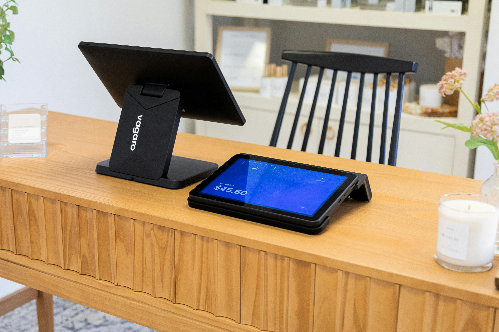

E-Invoice for B2C: How Retailers Handle Walk-In Customers Without Issuing Thousands of Invoices
If you run a retail shop, restaurant, or any business serving walk-in customers, the e-invoice mandate raises an obvious worry: "Do I really have to generate a separate e-invoice for every single customer, even the ones who just buy a drink and leave?" The good news is no—LHDN designed a consolidation mechanism specifically for B2C. The catch is that you have to handle it correctly, and your POS system has to support it.
The Core Rule: Issue on Request, Consolidate the Rest
For business-to-consumer transactions, the framework works like this:
- If a customer requests an e-invoice, you must issue a proper individual e-invoice with their details (name and TIN where applicable).
- If a customer doesn't request one—which is the vast majority of walk-in retail—you issue a normal receipt at the point of sale, then submit a consolidated e-invoice covering all such transactions for the period.
In other words, you're not signing and submitting an e-invoice to LHDN for every coffee or t-shirt sold. You aggregate the non-requesting sales and submit them together.
How Consolidation Actually Works
A consolidated e-invoice batches your B2C transactions and is submitted to MyInvois periodically. The key parameters businesses need to know:
- Timing: Consolidated e-invoices are submitted within seven calendar days after the end of the month for the previous month's B2C transactions.
- Receipts still required: At the point of sale you still issue the customer a normal receipt. That receipt is what the customer walks away with.
- Line items: The consolidated document summarises the qualifying receipts for the period, following LHDN's formatting rules for how individual receipts are represented.
Some industries can't consolidate. LHDN excludes certain activities from consolidation—meaning they must issue individual e-invoices even for B2C. These have historically included sectors such as automotive, aviation, luxury goods, construction, and licensed betting/gaming. If you operate in a restricted category, confirm your specific obligation before assuming consolidation applies.
What This Means for Your POS System
Consolidation sounds simple until you realise your point-of-sale software has to do several new things reliably:
1. Capture e-invoice requests at the counter
When a customer does ask for an e-invoice, your staff need a fast way to capture the buyer's details and trigger an individual e-invoice—without holding up the queue. A clunky workflow here causes either long lines or skipped compliance.
2. Tag and store every transaction for consolidation
Every non-requesting sale has to be recorded with enough detail to be included in the monthly consolidated submission. Your system needs to reliably flag which transactions were already issued as individual e-invoices versus which still need consolidating—double-counting is a real risk.
3. Generate and submit the consolidated document
At period end, the system must aggregate the right transactions, format them to LHDN's schema, sign, and submit—then track validation outcomes. For most retailers this should be automated, not a manual month-end scramble.
4. Handle returns and voids cleanly
Refunds and voided sales that fall within a consolidation period have to be reflected correctly. A return processed after the consolidated invoice is submitted needs the proper adjustment mechanism, not a silent edit.
If your POS is a legacy system that wasn't built with e-invoice in mind, you usually don't need to replace it. The common approach is to add a consolidation module that reads completed transactions from your existing database, handles tagging and batching, and talks to MyInvois—leaving your day-to-day selling workflow untouched.
Common Mistakes That Create Compliance Problems
From what we've seen across retail and F&B businesses adapting to the mandate, these are the recurring pitfalls:
- Assuming consolidation applies when it doesn't — businesses in restricted industries discovering too late that they owe individual e-invoices.
- Missing the seven-day window — treating consolidation as a 'whenever we get to it' task instead of a hard monthly deadline.
- Double-counting — including transactions in the consolidated batch that were already issued as individual e-invoices on request.
- No reconciliation — not checking that the total of submitted e-invoices (individual + consolidated) matches actual sales, leaving gaps that surface during an audit.
- Ignoring validation failures — submitting a consolidated document and never confirming LHDN actually accepted it.
A Simple Monthly Workflow
For a typical retailer, a clean process looks like this:
- Throughout the month, issue receipts as normal; capture individual e-invoices only when customers request them.
- The system tags every transaction as 'individually invoiced' or 'pending consolidation'.
- After month-end, the system aggregates all pending transactions into a consolidated e-invoice and submits to MyInvois within seven days.
- Confirm validation outcomes and store the identifiers.
- Reconcile: total sales = individual e-invoices + consolidated e-invoice + any documented exclusions.
Done right, B2C e-invoicing adds almost no friction at the counter and becomes a quiet, automated month-end step. Done wrong, it becomes a manual headache and an audit risk.
Need B2C Consolidation Built Into Your POS?
SteadyDevs adds e-invoice consolidation to existing POS and retail systems—capturing on-request invoices at the counter, batching B2C sales, and submitting compliant consolidated documents to MyInvois automatically. Get a free consultation to see how it fits your setup.
Get Your FREE ConsultationFrequently Asked Questions
No. For B2C, you only issue an individual e-invoice when a customer requests one. All other sales are covered by a consolidated e-invoice submitted to LHDN after month-end. You still give every customer a normal receipt at the time of sale.
Consolidated e-invoices covering the previous month's B2C transactions are submitted within seven calendar days after the end of that month. It's a recurring monthly obligation, so it's best automated rather than done by hand.
Yes. LHDN excludes certain industries from consolidation—historically including automotive, aviation, luxury goods, construction, and licensed betting/gaming—requiring individual e-invoices even for B2C sales. Confirm your industry's specific rules before relying on consolidation.
Usually not. In most cases a consolidation module can be added to your existing POS—reading completed transactions, tagging them, and submitting consolidated e-invoices—without changing how your staff ring up sales.